<div class="home-container">
  <h1>Hi, I'm Karoline Bartsch. </h1>
<!--  -->
  <div class="typing-container">
    <div class="typed-out"><span class="aspiring">Aspiring </span> Full Stack Developer</div>
    </div>
  <button class="btn btn-primary">Learn More</button>
  </div>
<a href=""><span class="arrow"></span></a>

<svg xmlns="http://www.w3.org/2000/svg" version="1.1">
  <defs>


    <filter id="squiggly-0">
      <feTurbulence id="turbulence" baseFrequency="0.02" numOctaves="3" result="noise" seed="0"/>
      <feDisplacementMap id="displacement" in="SourceGraphic" in2="noise" scale="6" />
    </filter>
    <filter id="squiggly-1">
      <feTurbulence id="turbulence" baseFrequency="0.02" numOctaves="3" result="noise" seed="1"/>
      <feDisplacementMap in="SourceGraphic" in2="noise" scale="8" />
    </filter>

    <filter id="squiggly-2">
      <feTurbulence id="turbulence" baseFrequency="0.02" numOctaves="3" result="noise" seed="2"/>
      <feDisplacementMap in="SourceGraphic" in2="noise" scale="6" />
    </filter>
    <filter id="squiggly-3">
      <feTurbulence id="turbulence" baseFrequency="0.02" numOctaves="3" result="noise" seed="3"/>
      <feDisplacementMap in="SourceGraphic" in2="noise" scale="8" />
    </filter>

    <filter id="squiggly-4">
      <feTurbulence id="turbulence" baseFrequency="0.02" numOctaves="3" result="noise" seed="4"/>
      <feDisplacementMap in="SourceGraphic" in2="noise" scale="6" />
    </filter>
  </defs>
</svg>

